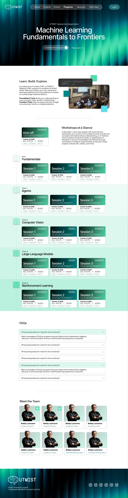
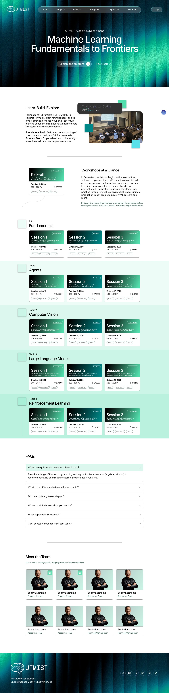

Figma frame 22:102 and the local implementation of /ml-fundamentals with Web-Redesign On.
The implementation labels sample content, preserves the 2025 archive, gives resource links accessible tap targets, and expands cards to fit their content.

